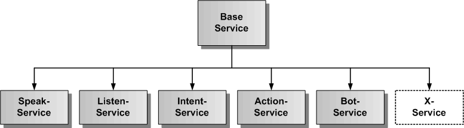
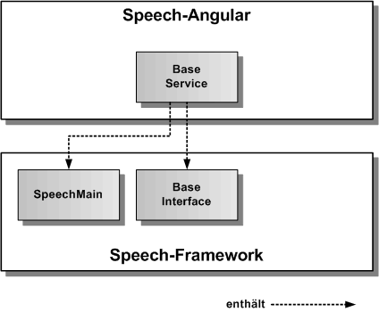
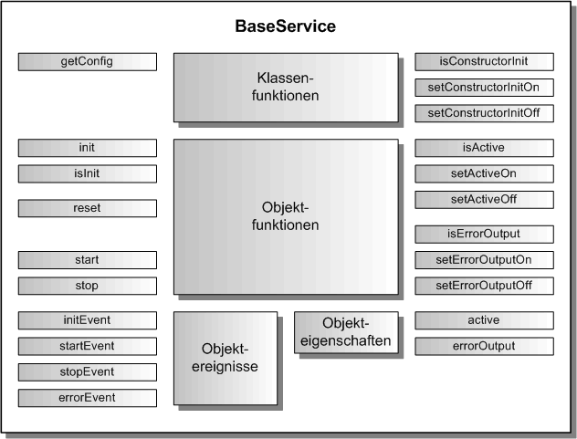

BaseService
Jeder Speech-Angular Service ist gleichartig aufgebaut und beinhaltet die gleiche geerbte Grundfunktionalität von BaseService, die hier kurz beschrieben wird.
Architektur
In der folgenden Grafik wird der BaseService als abstrakte Klasse dargestellt. Die anderen Services erben diese Basisfunktionalität.

BaseService verbindet sich mit dem SpeechMain Singleton und bindet die Schnittstelle der Base-Komponente aus Speech-Framework ein, wie in der nächsten Grafik dargestellt. SpeechMain ist das oberste Objekt zur Initialisierung von Speech-Framework und BaseInterface definiert die abstrakte Basisschnittstelle aller exportierbaren Komponenten des Speech-Frameworks.

API
Jeder Speech-Angular Service besitzt die gleiche Schnittstelle für die hier vorgestellte Grundfunktionalität. Die folgende Grafik zeigt einen Überblick über die gesamte API jedes Speech-Angular Services. Die API teilt sich auf in statische Klassenfunktionen, Objektfunktionen, Objektereignisse und Objekteigenschaften. Die API verfügt über eine auf Funktionen und eine auf Eigenschaften basierende Schnittstelle. Die gleiche Aufgabe kann über Funktionsaufrufe oder über das Setzen von Eigenschaften erledigt werden.

Die statischen Klassenfunktionen dienen der Konfiguration eines Services vor seiner Erzeugung, sowie der Festlegung, ob die init()-Funktion im Konstruktor des Services bereits aufgerufen wird oder nicht. Dazu werden die Klassenfunktionen mit dem Klassennamen des Services aufgerufen, wie z.B. die Rückgabe der Konfiguration mit service.getConfig(). Die Objektereignisse geben Angular-EventEmitter zurück, diese sollten mit subscribe aufgerufen werden und die Rückgabe sollte in einer Variablen für den Aufruf von unsubscribe gespeichert werden:
// Setzen einer Ereignisfunktion mit subscribe
const errorEvent = service.errorEvent.subscribe( aError => console.log('Fehlerausgabe:', aError.message));
...
// Freigabe der Ereignisfunktion mit unsubscribe
errorEvent.unsubscribe();
Importieren
Um einen Service importieren zu können, muss in der jeweiligen Komponente folgende Zeile eingefügt werden:
import { XxxService } from 'speech-angular'
Dazu müssen das Speech-Framework und das Speech-Angular npm-Paket in der gleichen Version vorher ins eigene AngularApp-Projekt kopiert und installiert worden sein.
$ npm install --save speech-framework-<version>.tgz
$ npm install --save speech-angular-<version>.tgz
Konfiguration
Dier erste Aufgabe vor Nutzung eines Services besteht in der Festlegung der Konfiguration vor der Erzeugung des Services in Angular. In der Defaulteinstellung wird die init()-Funktion im Konstruktor aufgerufen und die voreingestellte Konfiguration übernommen. Will man die Defaultkonfiguration überschreiben, holt man sie sich mittels der Klassenfunktion service.getConfig(). Diese Funktion gibt das ServiceConfig-Objekt eines Services zurück.
Grundelemente jeder Service-Konfiguration:
// hier sind die Defaultwerte des SpeakService festgelegt
export const SpeakServiceConfig: SpeakServiceOptionInterface = {
/** ein/ausschalten des Service */
activeFlag: true,
// hier kommen die servicespezifischen Konfigurationsparameter hin
/** legt fest, ob die Fehlermeldungen zusaetzlich auf der Konsole ausgegeben werden */
errorOutputFlag: false
};
Die Konfiguration kann man nur in der obersten app.module.ts vornehmen, da sie vor der Erzeugung jedes Speech-Angular Services stattfinden muss.
Auszug aus der Datei: src/app/app.module.ts:
import { BrowserModule } from '@angular/platform-browser';
import { NgModule } from '@angular/core';
import { AppComponent } from './app.component';
// XxxService von Speech-Angular
import { XxxService } from 'speech-angular';
@NgModule({
declarations: [
AppComponent
],
imports: [
BrowserModule
],
providers: [XxxService],
bootstrap: [AppComponent]
})
export class AppModule {
// nur hier kann die SpeakService-Konfiguration geaendert werden
constructor() {
// XxxService-Konfiguration holen
const serviceConfig = XxxService.getConfig();
// hier kann man alle Konfigurationswerte aendern, diese werden bei der Initialsierung uebernommen
// es muessen nur die von den Defaultwerten abweichenden Werte eingetragen werden
serviceConfig.activeFlag = false;
// hier kommen die servicespezifischen Konfigurationsparameter hin
serviceConfig.errorOutputFlag = true;
}
}
Soll die init()-Funktion manuell nach der Erzeugung des Service aufgerufen werden, so muss im AppModule-Konstruktor die Klassenfunktion Service.setConstructorInitOff() aufgerufen werden. Damit schaltet man den Aufruf von init() im Service-Konstruktor aus.
Auszug aus der Datei: src/app/app.module.ts:
...
export class AppModule {
// nur hier kann die XxxService-Konfiguration geaendert werden, da der Konstruktor von XxxService
// noch nicht aufgerufen worden ist
constructor() {
XxxService.setConstructorInitOff();
}
}
Die init()-Funktion kann man dann zu einem beliebig späteren Zeitpunkt z.B. in der AppComponent mit eigenen optionalen Parametern aufrufen.
Auszug aus der Datei: src/app/app.component.ts:
import { Component, OnInit } from '@angular/core';
// Speech-Angular Service
import { XxxService } from 'speech-angular';
// App-Komponente
@Component({
selector: 'app-root',
templateUrl: './app.component.html',
styleUrls: ['./app.component.css']
})
export class AppComponent implements OnInit {
title = 'Speech-Angular-App';
constructor( private service: XxxService ) {}
ngOnInit(): void {
// Hier wird der XxxService manuell mit optionalen Parametern initialisiert
service.init({ errorOutputFlag: true });
}
}
Service ein/ausschalten
Jeder Speech-Angular Service kann aktiviert und deaktiviert werden. Zu Beginn ist er defaultmäßig immer aktiviert, es sei denn, man hat in der Konfiguration das activeFlag auf false gesetzt, oder die zugrunde liegende Funktionalität des Speech-Frameworks steht nicht zur Verfügung. Für das Setzen auf aktiv ein/aus kann man die Funtionen service.setActiveOn() und service.setActiveOff() benutzen, oder man setzt die Eigenschaft service.active auf true oder false. Ist der Service aktiv, werden alle Funktionen des Service ausgeführt, ist der Service deaktiviert, werden global keine seiner Funktionen ausgeführt. Prüfen kann man den Aktivzustand über service.isActive()-Funktion oder man liest die Eigenschaft service.active aus.
// Service einschalten per Funktion
service.setActiveOn();
// oder per Eigenschaft
service.active = true;
// Service ausschalten per Funktion
service.setActiveOff();
// oder per Eigenschaft
service.active = false;
// Abfrage auf aktiv per Funktion
if ( service.isActive()) { ... }
// oder per Eigenschaft
if ( service.active ) { ... }
Fehlerausgabe auf die Entwicklerkonsole
Bei der Integration eines Speech-Angular Services ist es mitunter sinnvoll, seine Fehlerausgaben auf die Entwicklerkonsole sofort auszugeben, um die Ursache eines Problems schneller finden zu können. Dazu kann die Fehlerausgabe auf die Konsole ein- und ausgeschaltet werden. Mit den Funktionen service.setErrorOutputOn() und service.setErrorOutputOff() kann man die Fehlerausgabe ein- und ausschalten. Mit der service.isErrorOutput()-Funktion kann man den Zustand für die Fehlerausgabe abfragen. Für das Setzen der Fehlerausgabe gibt es die Eigenschaft service.errorOutput, in die man true oder false eintrqagen kann, die man aber auch auslesen kann. Das errorOutputFlag kann auch in der Konfiguration gesetzt werden.
// Fehlerausgabe einschalten per Funktion
service.setErrorOutputOn();
// oder per Eigenschaft
service.errorOutput = true;
// Fehlerausgabe ausschalten per Funktion
service.setErrorOutputOff();
// oder per Eigenschaft
service.errorOutput = false;
// Abfrage auf aktiv per Funktion
if ( service.isErrorOutput()) { ... }
// oder per Eigenschaft
if ( service.errorOutput ) { ... }
Service initialisieren
Es kann jederzeit die service.init()-Funktion aufgerufen werden, wobei nur die übergebenen optionalen Parameter neu gesetzt werden. Will man den Service komplett auf seine Defaultkonfiguration zurücksetzen sollte man service.reset() verwenden. Ruft man service.init() ohne optionale Parameter auf, hat dies keinen Effekt.
Service zurücksetzen
Der Service kann mit der service.reset()-Funktion auf seine Defaultkonfiguration und Einstellungen zurückgesetzt werden. Auch hier können optionale Parameter mitübergeben werden, die dann gesetzt werden.
Service Fehlerereignis
Jeder Speech-Angular Service besitzt ein errorEvent, den man mit einer eigenen Fehlerfunktion belegen kann, um Fehler zu erhalten und behandeln zu können. Weitere Ereignisse werden spervicespezifisch definiert.
Service starten und stoppen
Jeder Speech-Angular Service wird mit service.start() ausgeführt und mit service.stop() wieder beendet. Optional können vorher Eigenschaften des Services gesetzt werden, die er zu seiner Ausführung benötigt.
Beispiel-Komponente für die Integration eines Speech-Angular Services:
import { Component, OnInit, OnDestroy } from '@angular/core';
// Speech-Angular Service
import { XxxService } from 'speech-angular';
@Component({
selector: 'app-speak',
templateUrl: './speak.component.html',
styleUrls: ['./speak.component.css']
})
export class SpeakComponent implements OnInit, OnDestroy {
errorEvent = null;
constructor( private service: XxxService ) {}
// Fehlerereignis eintragen
ngOnInit() {
this.errorEvent = service.errorEvent.subscribe(aError => console.log('Fehler:', aError.message));
}
// Fehlerereignis freigeben
ngOnDestroy() {
this.errorEvent.unsubscribe();
}
// eigene Funktionen zur Einbindung des Speech-Angular Services in einer eigenen Angular-Komponente
startService() {
this.service.start();
}
stopService() {
this.service.stop();
}
}